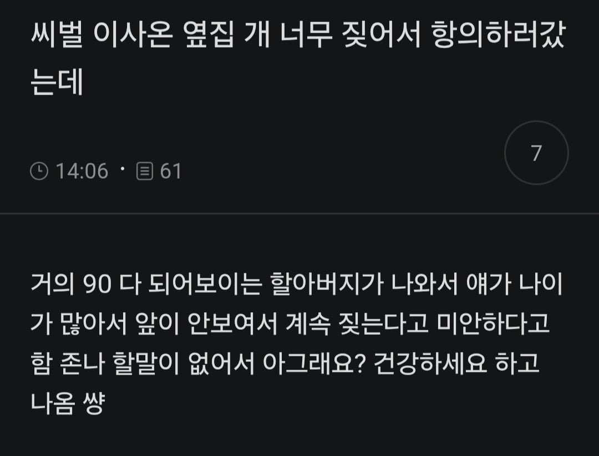

항의해서 상황이 달라질 수 있는가? > 아니오

항의해서 상황이 달라질 수 있는가? > 아니오
카페 ui같은거 보니 여초 사이트일거임 그러니 착한청녀
청년은 여자도 포함이야…
파릇파릇한 년
글래같은 년
(숙연)
할수있는게 없구나....
난 저런 상황 생기면 그냥 내가 귀막고삼 오래오래 사세요
나도 전에 윗집 애들이 계속 뛰어다니는데 애들 뛰어다니는거하고 부모님들이 뛰지 말라고 혼내는 소리가 동시에 들려서 그냥 그러려니 했음... 매트도 깔았다는데 거기서부턴 불가항력이지
그치...이건 어쩔수 없지
기억은 잘 안나지만 나도 잼민이때 많이 뛰어다녔을거기때문에... 애들 뛰는거 정도는 크게 막 뭐라고하기가 좀 그럼
부모가 대놓고 방치하고 너무 심하다 그러면 항의하겠지만
나름 제지하는데도 그게 잘 안될거를 아니까
더 할게 없긴하네 ㅋㅋㅋㅋㅋ
옆집 개가 짖어서 따라 짖었다는줄
어쩔수 없지...
저 상황에서 할 수 있는 말이 뭐가 있을까..
싸패면 가능함.
그래서요? 조용좀 해주세요 하고
??? : 아 예 곧 조용해질겁니다
???:못 들었어요? 지금 당장 조용히 하라구요
나이를 곱게 먹어야죠.
개가 아마 치매인듯 ㅠ 슬프네
보통은 따질상황에서 가해자(?)가 미안해하거나
뭐라도 하는 노력이 보이면 많이들 그냥 그러려니 함
그런거도 없이 아 개새끼가 당연히 짖는거지
애가 좀 뛸수도있죠 이지랄떨면 그때부터 전쟁인거지
가불기 두개는 악질이잖아..
가불기 상황에다가 할아버지가 미안하다는데 어쩌겠어
아오.. 노견용 가수분해 사료 있어요? 없으면 하나 드릴 깨
건강하세요
두분다
아휴 미안하다는데 것도 90할아버지가 뭐 그러려니 하고 가끔 인사나 해야지 뭐
글쓴이가 현명하고 착하네
진상들은 저기서 그래서 어쩌라고요 이런태도고 자기 감정만 앞세우는데
아랫집 할머니 개 지지난주에 죽음 걔도 그랬던건가 엄청 짖었는데..후 그래도 문아래로 기어나와서 나 물라고했을때 싸커킥 맞을뻔해서 나 볼땐 대가리 숙였었음
나도 그래서 어쩔수 없는 상황에서 오는 불편함은 그러려니 하고 넘어가려고 노력함
그렇게 생각 하고나면 스트레스도 덜 받더라
항의해서 상황이 달라질 수 있는가? > 아니오
존나 폭력적인 팩트네
아... 내가 참아야지 뭐 ㅋㅋㅋ
?? : 된장 바르시죠
앞이 안보이면 방어적으로 짖는경우 있다고 하긴 함
몇년전에 18살 강아지가 비슷한 상황이었는데 엘베에서 옆집 사람들 만나면 먼저 혹시 시끄러우신지랑 죄송하다고 했었는데 괜찮다고 하셨다. 그리고 강아지가 떠나고 나서 엘베에서 옆집 아주머니 만났는데 강아지 잘 지내냐고 하셔서 떠났다고 했는데 슬픈거랑은 별개로 우리 아파트 방음 실제로 잘 되는구나 생각함.
나중에 짖는 소리 안들리면 조용함과 동시에 공허함이 있지않을까..
여담으로 앞이 안보이면 벽에 몸을 기대고 걷는 강아지들이 있대 주인들은 볼때마다 맘 아플듯
상상하니깐 가슴이 철렁이네...
여시 두글자만 ㅇㄱㄸ마냥 지워서 퍼온게 웃기네 ㅋㅋㅋ
쩝.... 얼마 안남았네요(주어 없음)
나도 이웃간 소음때문에 진짜 나쁜생각도 많이 했는데 대화 좀 나눠보고 악한의도가 없으며 어쩔수없는 소음이라고 인정하고부터는 그냥 용서하고 지내기로 함. 그냥 실리콘 귀마개 끼고 노캔헤드폰낌.. 더이상의 항의로는 변할수있는 구간이 없다고 생각해서
할아버지도 쇠약해보이고 강아지도 안되서 발길을 돌렸습니다
오래오래살아라
쇠약한 노인이 미안하다는데 알겠다고해야지..뭐
개도 노견이라니...
어쩌겠누... 귀마개 사야지..
노이즈 캔슬링 하나 사라...
나도 개 마지막에 잘 못걷고 눈 안보이는데 개가 산책 좋아해서 항상 들고 나가서 돌아다녔음
착한청년..